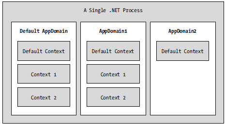

As you have just seen, AppDomains are logical partitions within a process used to host .NET assemblies. On a related note, a given application domain may be further subdivided into numerous context boundaries. In a nutshell, a .NET context provides a way for a single AppDomain to establish a “specific home” for a given object.
Note Friendly FYI, while understanding processes and application domains is quite important, most .NET applications will never demand that you work with object contexts. I've included this material just to paint a more complete picture.
Using context, the CLR is able to ensure that objects that have special runtime requirements are handled in an appropriate and consistent manner by intercepting method invocations into and out of a given context. This layer of interception allows the CLR to adjust the current method invocation to conform to the contextual settings of a given object. For example, if you define a C# class type that requires automatic thread safety (using the [Synchronization] attribute), the CLR will create a “synchronized context” during allocation.
Just as a process defines a default AppDomain, every application domain has a default context. This default context (sometimes referred to as context 0, given that it is always the first context created within an application domain) is used to group together .NET objects that have no specific or unique contextual needs. As you may expect, a vast majority of .NET objects are loaded into context 0. If the CLR determines a newly created object has special needs, a new context boundary is created within the hosting application domain. Figure 16-3 illustrates the process/AppDomain/context relationship.
Figure 16-3 Processes, application domains, and context boundaries
.NET objects that do not demand any special contextual treatment are termed context-agile objects. These objects can be accessed from anywhere within the hosting AppDomain without interfering with the object’s runtime requirements. Building context-agile objects is very easy, given that you simply do nothing (specifically, you do not adorn the type with any contextual attributes and do not derive from the System.ContextBoundObject base class):
// A context-agile object is loaded into context zero. class SportsCar{}
On the other hand, objects that do demand contextual allocation are termed context-bound objects, and they must derive from the System.ContextBoundObject base class. This base class solidifies the fact that the object in question can function appropriately only within the context in which it was created. Given the role of .NET context, it should stand to reason that if a context-bound object were to somehow end up in an incompatible context, bad things would be guaranteed to occur at the most inopportune times.
In addition to deriving from System.ContextBoundObject, a context-sensitive type will also be adorned by a special category of .NET attributes termed (not surprisingly) context attributes. All context attributes derive from the ContextAttribute base class. Let’s see an example.
Assume that you wish to define a class (SportsCarTS) that is automatically thread safe in nature, even though you have not hard-coded thread synchronization logic within the member implementations. To do so, derive from ContextBoundObject and apply the [Synchronization] attribute as follows:
using System.Runtime.Remoting.Contexts; // This context-bound type will only be loaded into a // synchronized (hence thread-safe) context. [Synchronization] class SportsCarTS : ContextBoundObject {}
Types that are attributed with the [Synchronization] attribute are loaded into a thread-safe context. Given the special contextual needs of the SportsCarTS class type, imagine the problems that would occur if an allocated object were moved from a synchronized context into a nonsynchronized context. The object is suddenly no longer thread safe and thus becomes a candidate for massive data corruption, as numerous threads are attempting to interact with the (now thread-volatile) reference object. To ensure the CLR does not move SportsCarTS objects outside of a synchronized context, simply derive from ContextBoundObject.
Although very few of the applications you will write will need to programmatically interact with context, here is an illustrative example. Create a new Console Application named ObjectContextApp. This application defines one context-agile class (SportsCar) and a single context-bound type (SportsCarTS):
using System; using System.Runtime.Remoting.Contexts; // For Context type. using System.Threading; // For Thread type. // SportsCar has no special contextual // needs and will be loaded into the // default context of the app domain. class SportsCar { public SportsCar() { // Get context information and print out context ID. Context ctx = Thread.CurrentContext; Console.WriteLine("{0} object in context {1}", this.ToString(), ctx.ContextID); foreach(IContextProperty itfCtxProp in ctx.ContextProperties) Console.WriteLine("-> Ctx Prop: {0}", itfCtxProp.Name); } } // SportsCarTS demands to be loaded in // a synchronization context. [Synchronization] class SportsCarTS : ContextBoundObject { public SportsCarTS() { // Get context information and print out context ID. Context ctx = Thread.CurrentContext; Console.WriteLine("{0} object in context {1}", this.ToString(), ctx.ContextID); foreach(IContextProperty itfCtxProp in ctx.ContextProperties) Console.WriteLine("-> Ctx Prop: {0}", itfCtxProp.Name); } }
Notice that each constructor obtains a Context object from the current thread of execution, via the static Thread.CurrentContext property. Using the Context object, you are able to print out statistics about the contextual boundary, such as its assigned ID, as well as a set of descriptors obtained via Context.ContextProperties. This property returns an array of objects implementing the IContextProperty interface, which exposes each descriptor through the Name property. Now, update Main() to allocate an instance of each class type:
static void Main(string[] args) { Console.WriteLine("***** Fun with Object Context *****\n"); // Objects will display contextual info upon creation. SportsCar sport = new SportsCar(); Console.WriteLine(); SportsCar sport2 = new SportsCar(); Console.WriteLine(); SportsCarTS synchroSport = new SportsCarTS(); Console.ReadLine(); }
As the objects come to life, the class constructors will dump out various bits of context-centric information (the "lease life time service property" printout is a low level aspect of the .NET remoting layer, and can be ignored):
***** Fun with Object Context ***** ObjectContextApp.SportsCar object in context 0 -> Ctx Prop: LeaseLifeTimeServiceProperty ObjectContextApp.SportsCar object in context 0 -> Ctx Prop: LeaseLifeTimeServiceProperty ObjectContextApp.SportsCarTS object in context 1 -> Ctx Prop: LeaseLifeTimeServiceProperty -> Ctx Prop: Synchronization
Given that the SportsCar class has not been qualified with a context attribute, the CLR has allocated sport and sport2 into context 0 (i.e., the default context). However, the SportsCarTS object is loaded into a unique contextual boundary (which has been assigned a context ID of 1), given the fact that this context-bound type was adorned with the [Synchronization] attribute.
Source Code The ObjectContextApp project is included under the Chapter 16 subdirectory.